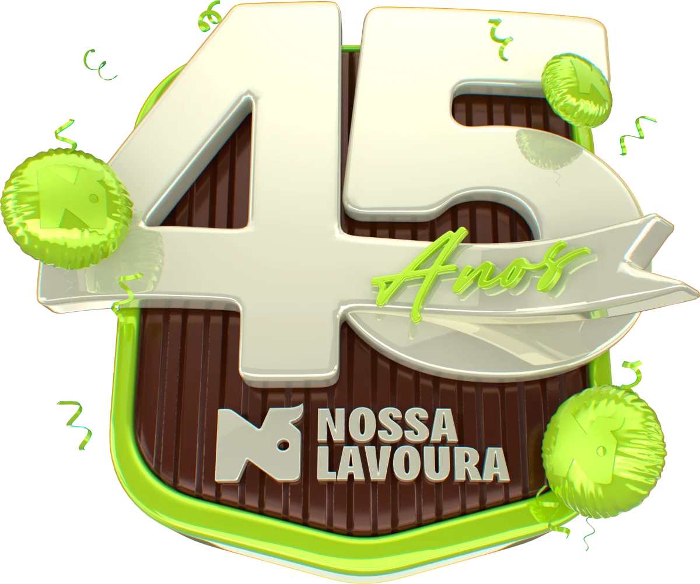
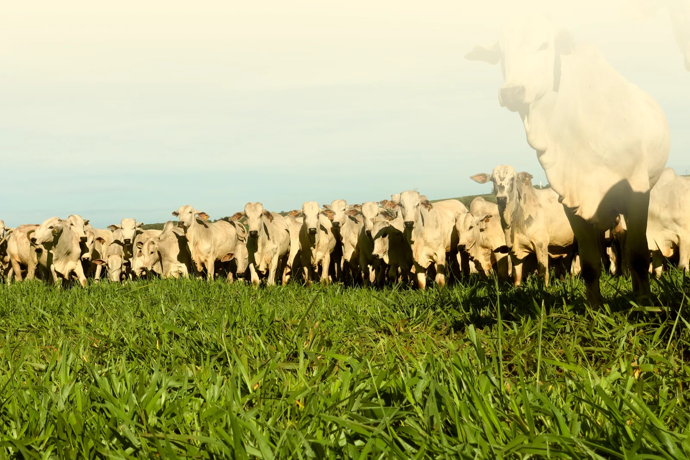

Obrigado, produtor. Esses 45 anos são seus também.
Cada conquista da Nossa Lavoura tem a marca de quem confia no nosso trabalho. Foi ao seu lado, no dia a dia do campo, que construímos essa história.
A Nossa Lavoura celebra 45 anos de história, construídos com trabalho, parceria e confiança ao lado do produtor. Esta é a nossa festa, e ela é sua também.


Nossa história
Começamos pequenos, em Jaru, atendendo quem chegava ao balcão com uma dúvida e um problema para resolver.
De lá para cá, quase tudo mudou. Mudou a fachada, mudou o nome na placa, mudaram as ferramentas, cresceu a equipe, cresceu o campo, cresceu a região inteira. Hoje são mais de 40 lojas em Rondônia, Acre e Amazonas.
Uma coisa não mudou: o motivo de abrir a porta todo dia. É o produtor que chega procurando a semente certa, a ração que vai render, o remédio que o rebanho precisa, o arame que vai segurar a cerca por mais um ano.
São 45 anos compartilhando sonhos, desafios, conquistas e o trabalho que move o campo todos os dias. Uma trajetória construída ao lado de produtores, colaboradores e parceiros que acreditaram, cresceram e ajudaram a escrever cada capítulo dessa história.
Relações construídas dia após dia, no campo e na vida. Com confiança, parceria e laços que atravessam gerações.
Linha do tempo
A primeira loja nasce em Jaru, atendendo os produtores da região.
A marca chega a novas praças de Rondônia e o atendimento se espalha pelo interior.
A rede chega a Pimenta Bueno, hoje a maior loja da Nossa Lavoura.
A marca assume o nome que a acompanha até hoje, e a assinatura que traduz o que ela faz: amiga de quem planta, cria e produz.
A celebração de quatro décadas e meia ao lado de quem faz o campo produzir.
O filme
O filme que preparamos para contar essa história do jeito que ela merece ser contada: pelas pessoas que a construíram.
O filme ainda não está disponível nesta página. Leia abaixo a versão em texto.
Há 45 anos, a Nossa Lavoura faz parte da vida de quem vive o agro. São 45 anos compartilhando sonhos, desafios, conquistas e o trabalho que move o campo todos os dias. A todos que fazem parte dessa jornada, o nosso sincero obrigado.
Nossa gratidão
Cada conquista da Nossa Lavoura tem a marca de quem confia no nosso trabalho. Foi ao seu lado, no dia a dia do campo, que construímos essa história.
Por trás de 45 anos de história existe gente dedicada, que veste a camisa todos os dias e cuida de cada produtor que chega à Nossa Lavoura. A cada colaborador, o nosso muito obrigado.
Em 45 anos de história, cada fornecedor e parceiro teve papel na jornada da Nossa Lavoura. É essa rede de confiança que nos permite levar as melhores soluções ao produtor.
Seguimos juntos, fortalecendo o agro!
19 a 24 de outubro
Para comemorar essa história, preparamos uma semana inteira de oportunidades para você economizar e produzir mais. São condições especiais em produtos para nutrição animal, pastagem, saúde do rebanho, sementes, máquinas, equipamentos e muito mais.
Ofertas por categoria
As condições de aniversário valem para as categorias que mais pesam na sua produção. Fale com o Consultor de Vendas da loja mais próxima e aproveite as melhores ofertas.
Nutrição animal
Soluções Supremax para cada fase do rebanho, com nutrição pensada para mais desempenho no campo.
Saúde animal
Soluções para prevenção, proteção e manejo sanitário que ajudam a manter a saúde e o desempenho do seu rebanho.
Pastagem e herbicidas
Tecnologia e inovação para proteger a sua pastagem com a linha exclusiva de herbicidas Corteva.
Sementes de pastagem
Sementes de qualidade para formar pastagens produtivas e preparar a propriedade para produzir mais.
Arames e cercas
Soluções para cercamento que entregam segurança, resistência e praticidade para a rotina da propriedade.
Máquinas e implementos
Máquinas e equipamentos para facilitar o trabalho e aumentar a eficiência nas atividades da propriedade.
Condições válidas de 19 a 24 de outubro de 2026, nas lojas participantes, enquanto durarem os estoques. Consulte o seu Consultor de Vendas.
Acelera no Campo 3.0
Comprando produtos Virbac e Supremax na Nossa Lavoura, você recebe cupons para concorrer a um Trator John Deere 5080E.
Promoção válida até 30 de novembro de 2026.
Ler o regulamentoConvite
Há 45 anos, crescemos ao lado de quem faz o agro acontecer.
Para celebrar essa trajetória construída com confiança, parceria e dedicação, preparamos um café da manhã especial para receber você.
Quando
Dias 19, 21 e 23 de outubro
Onde
Em todas as lojas Nossa Lavoura
Esperamos você para celebrar conosco e aproveitar as ofertas especiais de aniversário.
Onde nos encontrar
São mais de 40 lojas em Rondônia, Acre e Amazonas, com Consultores de Vendas que conhecem a realidade da sua região e da sua propriedade.
Foram 45 anos de porta aberta, de safra que deu certo e de safra que deu trabalho, de conversa no balcão e de visita na propriedade.
Obrigado por caminhar com a gente até aqui. O próximo capítulo a gente escreve junto.
Nossa Lavoura, amiga de quem planta, cria e produz
Aproveitar a semanaSemana de aniversário: 19 a 24 de outubro, em todas as lojas.
Ver as ofertas